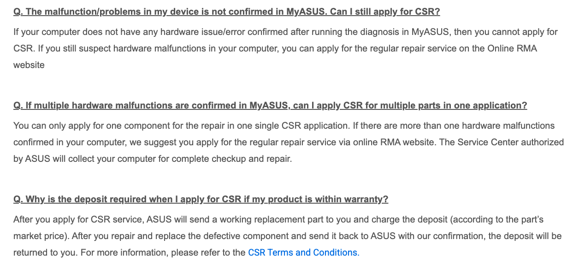
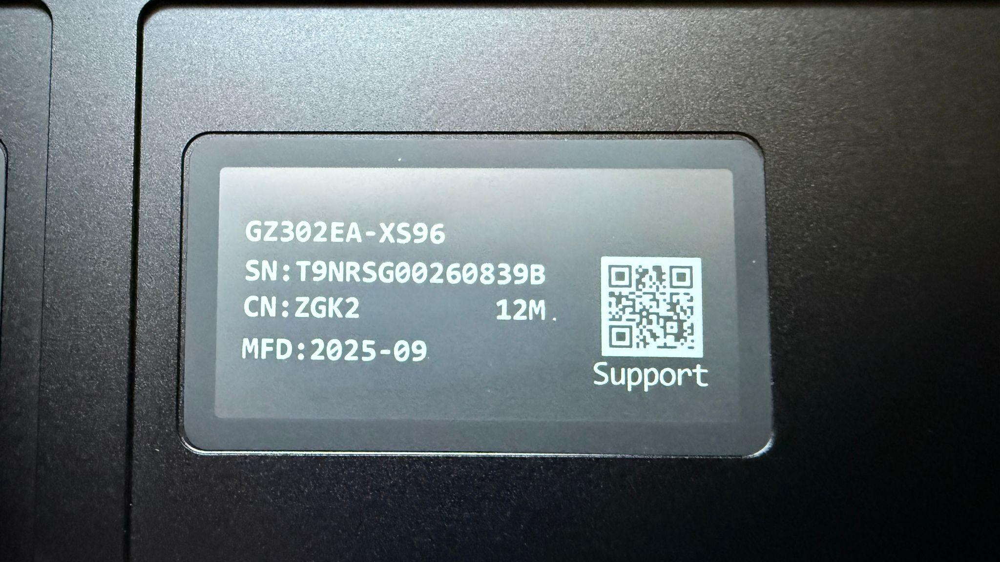

ASUS gave the Flow Z13 a 10/10. We put it to the test.
.png)
ASUS says the ROG Flow Z13 GZ302EA deserves a 10/10 on the French Repairability Index, and that claim is exactly the kind that begs for a closer look. The scorecard is public, which is useful. The tricky part is that not everything behind a perfect score is equally easy for a consumer, journalist, or independent repair group to verify.
We tried to verify that 10/10 claim from the outside. We could check the public scorecard, the published service manual, the physical design of the device, and the repair/support paths ASUS makes visible online. We could not independently verify every underlying commitment that feeds the French score, such as future parts availability, delivery timelines, or the internal evidence behind some criterion calculations.
The visible evidence gave us reasons to question whether a perfect score was plausible. The device has soldered USB-C ports, soldered RAM and wireless, and a fan trapped under the heatsink. The service manual is public and useful, but it lacks troubleshooting, board diagrams, and a parts list with part numbers. ASUS's official support route also does not clearly show ordinary consumers how to buy parts, and the customer self-repair pathway appears to depend on diagnostic gates, one-component requests, and possible deposits.
So we did the usual iFixit thing: we took the Flow Z13 apart, documented the repair experience, and scored it on our own repairability scale.
Our score was 7.4/10. The Flow Z13 earned most of its points from repairable design choices: a screen-first opening procedure, a screwed-in battery, an accessible SSD hatch, replaceable cameras and modules, and a useful public service manual. It lost points where those strengths did not translate into a complete repair experience: component-level soldering, harder fan access, incomplete documentation, and unclear parts access.
The Flow Z13 is, truth be told, a remarkably repairable device by modern tablet/laptop standards. ASUS made a repairable product, and a perfect repairability score should still be backed by evidence people can check, especially when the score depends partly on manufacturer commitments about future parts availability, delivery timelines, and support pathways.
iFixit has been publishing repairability scores since 2011, and our score does a different job from the French Repairability Index score. We consulted on the French system, but the two methods answer slightly different questions. The French score looks at a broader repair ecosystem in France. Our score puts more weight on product design, teardown evidence, and the repair experience available to a self-repairer right now.
Our scoring also uses product-group calibration in a specific way. Instead of simply adding up category weights and letting scores fall wherever they fall, we score a sample of products in a given category, then calibrate the range so the results spread out instead of clustering near the top. That matters here because the Flow Z13 is a real example of why calibrated scoring is useful: it combines genuinely repair-friendly design choices with barriers that keep a perfect score from being self-evident.
The design has real strengths: the screen comes away first, the battery is screwed rather than glued, the SSD is accessible behind a hatch, cameras and several modules are replaceable, and ASUS publishes a useful service manual. But the charging ports are soldered to the motherboard, RAM and wireless are soldered, one fan is trapped under the heatsink, and the official support path does not clearly lead ordinary consumers to buy parts. In other words, the calibration can reward the good design choices without flattening the repair barriers that still matter in practice.
The service manual is public and useful, though it lacks troubleshooting, a parts list with part numbers, and board diagrams. ASUS's official US support path did not expose parts for sale; the separate ASUS parts site appeared legitimate without a clear endorsement from the official support page.
ASUS has a lot of high French repairability scores. Its dedicated French repairability site claims 10/10 scores for the ROG Flow Z13 GZ302EA and the ROG Zephyrus GU605MZ. A broader public dataset contains many 10/10 ASUS entries, concentrated in variants of a small number of model families, so that count does not show a massive pattern across unrelated designs. The bigger issue is that high scores are everywhere: the public French repairability data is heavily clustered near the top.
Two stacked scores, two different methods
Swipe to inspect chart
The iFixit score is a separate assessment with a different method. Scoring the Flow Z13 revealed soldered RAM and wireless, soldered ports, weak parts access, and incomplete repair documentation.
The support flow matters
A perfect score has to cover more than opening the device. People also need the parts and information required after the product breaks. That is where the Flow Z13 gets more complicated: ASUS has repair documentation and a customer self-repair pathway, but the pathway comes with conditions that ordinary shoppers will not understand from a 10/10 score.
The support language matters because it affects whether repair is practical. If a customer has to pass a diagnostic gate, file separate requests, or put down a deposit tied to a part's market price, that should be visible in the evidence behind a perfect score.

The QR code is the right idea
Putting repair information one scan away is exactly where these rules should go. The Flow Z13's QR code is a genuinely good consumer-facing move: it gives the buyer a visible bridge from the physical product to repair support.
The hard part is making sure that scan takes people to usable repair paths instead of a support maze. In our review, the route from the QR code to actual parts access was still muddy, especially for repair-critical components that a self-repairer would need to identify, price, and buy without becoming an authorized service center.

The Flow Z13 is a useful test case precisely because ASUS has done a lot right. For consumers, a perfect score should start the repairability question, not end it. For journalists and regulators, the practical ask is narrower: perfect self-declared scores should come with criterion-level evidence and a way to check whether parts, documentation, and support commitments are delivered later.